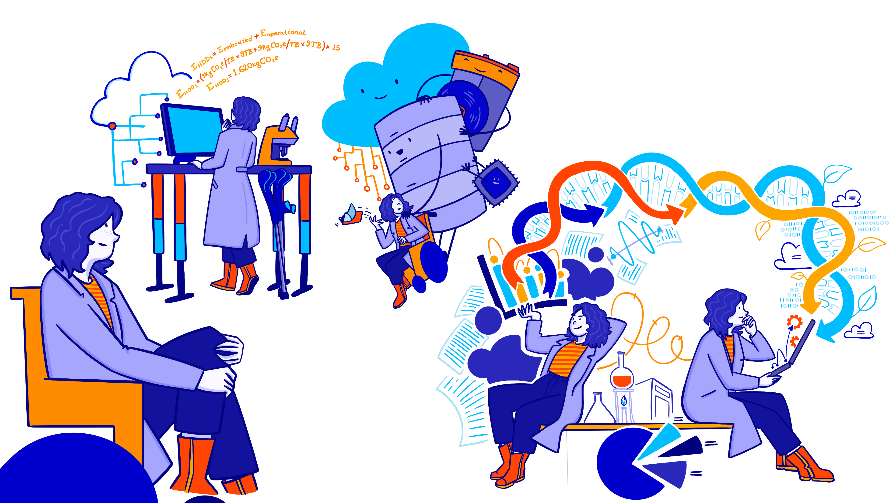
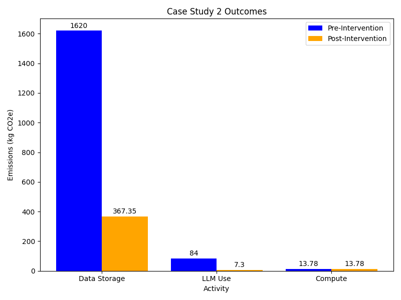

Case Study 2 - Lab Scientist doing computational work
Last updated on 2026-07-29 | Edit this page
Estimated time: 60 minutes
Overview
Questions
- What are the main carbon emission sources for a researcher conducting computational data analysis?
- How do data storage choices impact long-term carbon emissions in research projects?
- What are the trade-offs between using different LLM models for generating research code?
- How can hybrid storage strategies reduce carbon emissions while maintaining data accessibility?
Objectives
- Estimate carbon emissions from data storage, LLM usage, and computational processing using appropriate methodologies.
- Compare the carbon footprint of different storage technologies and LLM models.
- Evaluate the relative contribution of different activities to total research emissions and identify priorities for intervention.
- Design and implement emission reduction strategies including different storage strategies and appropriate LLM selection.
Scenario

Emma is aware that storing and processing large amounts of data generates a significant amount of carbon emissions. In order to reduce her research carbon footprint she wants to calculate the total emissions associated with her workflow and identify ways to reduce these emissions.
Collecting Information
Data Exploration (20 minutes)
Emma wants to learn more about each of the emission sources, focusing on the following areas of her digital work:
- Storing large amounts of scientific data
- Use of LLMs (online)
- Running data processing and analysis scripts
For each of these areas, how could Emma estimate or measure the associated emissions? What data would she need to collect in each case?
- Consider the different types of data storage and which ones are more suitable for Emma’s data.
- Think about Emma’s potential data management plan. What would be a realistic data management flow that Emma could adopt.
Data Storage
- Emma should first review her data management plan. How long is she going to keep the data for, how many copies and how much data would she need for active analysis.
- If Emma has particular storage devices in mind, she could look for PCF reports to get the embodied emissions and possibly a usage estimate. Such data is less readily available for storage devices, however. In the absence of PCF data, Emma could use some of the emissions estimates from sources such as those covered in episode 3. She will need to know the volume of data and the amount of time she’ll need to store it for.
Use of LLMs
- She could track which model she uses, and how many queries she sends, and the approximate size of the replies for use with the Hugging Face Ecologits calculator.
Data Processing and Analysis
- Looking for a PCF data sheet for her laptop will provide information about the embedded emissions. For the operational emissions she could choose between direct measurement with a power meter, use of a tool like codecarbon or estimation with the Green Algorithms Calculator. IIn the known context that operational emissions of laptops are low, it’s probably easiest to use the lowest effort method of the Green Algorithms calculator. She can always follow up with a more accurate method later, if the initial estimate seems significant. To do this, she’ll need an estimate of the CPU utilisation of her laptop and its specifications.
Analysis
Estimating Emissions (20 minutes)
Using the information below about Emma’s current workflow calculate an estimate of the carbon emissions associated with the Emma’s digital research activities.
Data Storage
- Her research will generate approx 3.5 TB of raw data for the duration of the project (5 years).
- She is planning to keep two copies of the raw data, which she will be storing on different HDDs.
- There will also be additional 400 GB of processed data per year that she will work with regularly. This adds up to 2 TB over the duration of the project.
- The data must be retained for 10 years after the end of the project, meaning that the data must be stored for a total of 15 years.
- Given that the lifespan of HDDs can reach 10 years in best case scenario, Emma will have to replace the HDDs at least once.
Use this table to estimate the emissions for storing her data on HDDs.
Use of LLMs
- Emma primarily interacts with an LLM via a browser chat window. She hasn’t paid much attention until now about which model she is using or how much she uses it. Checking now, the default model is GPT-5.4. She also keeps track of her usage during a session and finds that she sends 30 queries.
Use HuggingFace’s Ecologits calculator tool to estimate the emissions associated with Emma’s use of LLMs.
Running Scripts
- Emma is using her modern laptop and looks up the specifications for her model to get more accurate emissions. She finds that her laptop has a Core i5-1145G7 processor, with 4 CPU cores and 64 GB memory. Her analysis scripts are not parallelised so can only use up to 1 core. As she often leaves her scripts running overnight, she’s not sure exactly how long they take. For the next run she does she adds a command to record the total runtime which is 6 hours.
Use the Green-algorithms calculator to estimate the emissions emitted by Emma’s laptop.
- To estimate data storage, assume that the total 2 TB of processed data generated for the whole duration of the project (not 400 GB during the first year, 800 GB during the second year, etc.).
- If estimates for the GPT-5.4 model are not available, you can use the generic GPT-5 model estimate. Emma uses 30 as the number of queries but is not sure of the number of tokens that have been returned. Use the largest response size (15000 tokens) with the understanding that this is an overestimate.
- Use the Green-algorithms calculator with her CPU model running for 6 hours with 1 core.
The estimated emissions associated with Emma’s work, which she will be storing on different HDDs.flow are as follows:
Data Storage
\[ E_{HDDs} = E_{embodied}+ E_{operational} \\ E_{HDDs} = (3 kgCO₂e/TB \times 9 TB + 9 kgCO₂e/TB \times 9 TB) \times 15 \\ E_{HDDs} = 1,620 kgCO₂e \]
Storing the 9 TB data on HDDs will have associated carbon emissions approximately equal to 1,620 kgCO₂e in combined embodied and operational emissions, based on the average values within the emissions ranges she identified in this table.
LLMs Usage
Using HuggingFace’s Ecologits calculator tool and the GPT-5 model estimate gives a emissions of 10.8 gCO2e per query and running 30 queries generates 0.324 kgCO₂e. Assuming an average of 1 session (30 queries) per week over the 5 year course of the project that gives a total of 84 kgCO₂e.
Note that this estimate doesn’t include emissions from model training.
Running Scripts
Using the Green-algorithms calculator with her CPU model running for 6 hours with 1 core to find that the emissions emitted by her laptop - 53.20 gCO₂e each time. If she runs the similar analyses weekly over the 5 year course of the project, the total emissions would be 13.78 kgCo2e.
Taking Action
Based on the calculations above, storing research data and using LLM’s are the activities with the largest associated carbon emissions. At around 1,700 kgCO2e, these activities account to around a third of the emissions per-capita in the UK,according to the International Energy Association. While lower in comparison, the emissions linked to using LLMs to help write her code are not insignificant and are equivalent to charging a smartphone nearly 7000 times. With this in mind, Emma wants to develop an improved research workflow to reduce her digital carbon footprint.
Measures to Reduce Emissions (20 minutes)
Emma identifies several ways in which she can improve her data storage and LLM usage. In your groups, discuss any other measures you think could be implemented and what impact they might have.
Data Storage Changes
- Emma has heard that her institution provides tape-based cold storage options located in two different campuses, and which are intended for data that is not accessed very often. She decides to keep the two copies of the raw data on the LTO-tape based storage provided by her institution, with each copy being stored at a different site. This ensures the data is safe in case something happens with one of the storages. She decides to keep her processed data on HDDs, as she needs easy and fast access for analyses.
- Given that magnetic tape has negligible emissions when idle, we can assume that the total emissions from storing data on tape come from embodied emissions, estimated at ~0.07 kgCO₂e per TB. Keeping the two copies of raw data (7 TB) in the institution’s LTO‑tape storage facilities would therefore generate 7.35 kgCO₂, while keeping the 2 GB of processed data on HDDs would generate 360 kgCO₂. Therefore, the total costs associated with storing Emma’s research data would be 367.35 kgCO₂e.
Outcomes
A comparison of the emissions associated with Emma’s current workflow and the improved one can be found below:

Adopting the improved workflow would result in a five-fold reduction in Emma’s digital carbon emissions. Particularly, moving from storing data on HDDs to a hybrid storage approach that includes both HDDs and LTO-tapes has the greatest impact on lowering emissions, saving around 1,250 kgCO2e, which is equivalent to the total annual electricity-related emissions of three average UK households.
- Storing large amounts of research data can have significant environmental impacts.
- Having a good data management plan and using appropriate storage medium can reduce the carbon emissions associated with storing data.
- Not all tasks require the most advanced LLM model. Switching from a reasoning model to a less powerful model for simple data processing and analysis scripts can also contribute to lowering carbon emission associated with digital research.
- While Emma’s improvements are substantial, they represent only one piece of a larger puzzle. For a life scientist, the total work-related emissions typically range from 4 to 15 tCO2e annually 2. These numbers are driven by carbon intensive activities, such as international travel, laboratory heating, ventilation and AC systems, and the heavy use of chemical reagents and single-use equipment.
References
- Winter N,The paradox of the life sciences: How to address climate change in the lab: How to address climate change in the la. doi: 10.15252/embr.202256683
- Woo, N.H. A comparative study of AI and human programming on environmental sustainability. Sci Rep 15, 39182 (2025). https://doi.org/10.1038/s41598-025-24658-5
- Data storage is often the dominant source of carbon emissions for researchers working with large datasets and long retention requirements.
- Adopting a tiered storage strategy — using LTO tape for archival data and HDDs or SSDs for actively accessed data — can reduce storage emissions by an order of magnitude.
- Choosing a smaller, task-appropriate LLM model can reduce AI inference emissions dramatically compared with using the largest available model.
- Defining a data management plan before a project begins helps avoid unnecessary data collection, replication, and long-term storage.
- Contextualising digital emissions alongside other research activities such as lab equipment and travel helps identify where reductions will have the greatest impact.